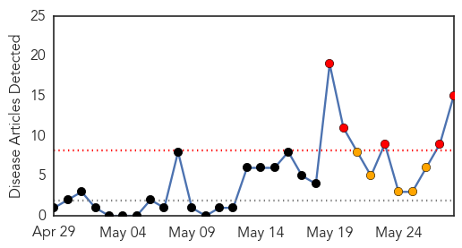
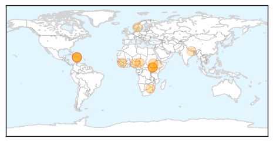

30 Day Trends
Web: 5 alerts, 5 warnings
Twitter: 3 alerts, 0 warnings
Top Articles:
- 0.999
- South Sudan cholera outbreak grows, 670 cases in Juba
- 0.999
- South Sudan capital faces worsening cholera outbreak
- 0.997
- WHO reports 2 cholera deaths in Cameroon
- 0.997
- Agencies say expected cholera cases in Juba could double - South Sudan
- 0.996
- Haiti: UN, Government report lowest number of cholera cases to date
- 0.995
- A Cholera Vaccine Halts New Cases In A Guinea Epidemic
- 0.991
- Committee for Elimination of Cholera Holds First Meeting
- 0.990
- Untreated Nile water caused Juba’s cholera outbreak – WHO
- 0.973
- Cholera cases in Haiti drop by 75 per cent
- 0.969
- Symptoms of Cholera reported in North West
- 0.969
- Funding can't keep up with hunger warnings in sub-Saharan Africa
- 0.832
- A desperate situation as famine looms - South Sudan
- 0.754
- Cholera outbreak exposes reality of ODF campaign
- 0.647
- UN concerned over South Sudanese people fleeing fighting
- 0.592
- Commission Decision of 7.5.2014 financing humanitarian actions in Haiti from the Bridging Facility (ECHO/HTI/EDF/2014/01000) - Haiti
Top Tweets:
-
No tweets found for May 28, 2014
Web/News Articles
Tweets

Article Locations
Article Confidences